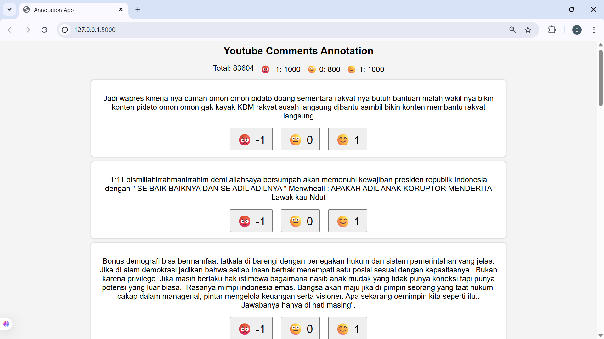

01 — OVERVIEW
Overview
The project studies Indonesian political discussion at scale by combining YouTube data collection, manual annotation, transformer fine-tuning, batch inference, and result analysis.
02 — ANNOTATION WORKFLOW
Annotation workflow
A custom Flask interface supports pagination-based labeling, real-time statistics, temporary in-memory updates, and export to CSV or Excel.

03 — MODELING
Modeling
XLM-RoBERTa is fine-tuned for negative, neutral, and positive classes. Its multilingual representation is useful for Indonesian comments containing slang and mixed language.
04 — LIMITATIONS
Limitations
Sarcasm, code-mixing, regional languages, and shifting political context remain difficult. Future work can compare IndoBERT variants and expand the manually annotated dataset.